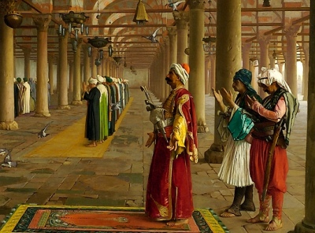

|
 |
The Holy Qur'anArabic TextArabic PronunciationEnglish text by A. Yusuf Ali |
This is the main Qur'an version at sacred-texts.com. The Arabic is presented as embedded graphics in the GIF format. To allow for viewing on slower systems, each Surah is broken down into traditional sections, which usually include about a dozen verses. Each verse is presented in Arabic along with a pronunciation guide, and The Yusuf Ali English text. The system used in the pronunciation guide can be viewed in this file. This text is hyperlinked with other English versions and transcriptions of the Qur'an at this site.
{kind=link}
The Yusuf Ali English text is based on the 1934 book, The Holy Qur-an, Text, Translation and Commentary, (published in Lahore, Cairo and Riyadh). This version is widely used because it is a clear, modern and eloquent translation by a well-respected Muslim scholar. The English text was revised in 2009-10 to more closely match the source book. This improved text is also available here, presented one surah per file.
NOTICE. The English text presented here was free of copyright in the US until 1996, at which point it had a pro-forma copyrighted status created which will last until 2033. However in many countries, including its original country of publication, Pakistan, this text is currently in the public domain. Here's how this happened. Yusuf Ali died in 1952, and Pakistan (his country of residence) has copyright rules of life+50. So the Pakistan copyright expired in 2002. The Ali Qur'an English text was first published in the US in 1946, but was never registered or renewed, so it was never copyrighted in the US. The GATT copyright law granted US copyrights to works not in the public domain in the country of publication as of 1/1/1996, for a full term of 95 years from the date of original publication. This includes works that were never copyrighted in the US or whose US copyrights had already expired, in which category this work falls. We are sure that Yusuf Ali labored on this work so that the world could benefit from it, not to lock it up as someone's personal intellectual property. However, if anyone can establish that they are the copyright holder, we will promptly comply with their wishes.
Sūra I.: Fātiḥa, or the Opening Chapter.
Sūra II.: Baqara, or the Heifer.
Sūra III.: Āl-i-’Imrān, or The Family of ’Imrān.
Sūra IV.: Nisāa, or The Women.
Sūra V.: Māïda, or The Table Spread.
Sūra VI.: An’ām, or Cattle.
Sūra VII.: A’rāf, or the Heights
Sūra VIII.: Anfāl, or the Spoils of War.
Sūra IX.: Tauba (Repentance) or Barāat (Immunity).
Sūra X.: Yūnus, or Jonah.
Sūra XI.: Hūd (The Prophet Hūd).
Sūra XII.: Yūsuf, or Joseph.
Sūra XIII.: Ra’d, or Thunder.
Sūra XIV.: Ibrāhīm, or Abraham.
Sūra XV.: Al-Hijr, or The Rocky Tract.
Sūra XVI.: Naḥl or The Bee.
Sūra XVII.: Banī Isrā-īl, or the Children of Israel,
Sūra XVIII.: Kahf, or the Cave.
Sūra XIX.: Maryam, or Mary.
Sūra XX.: Ṭā-Hā. (Mystic Letters, Ṭ. H.)
Sūra XXI.: Anbiyāa, or The Prophets
Sūra XXII.: Ḥajj, or The Pilgrimage.
Sūra XXIII.: Mu-minūn, or The Believers.
Sūra XXIV.: Nūr, or Light.
Sūra XXV.: Furqān, or The Criterion.
Sūra XXVI.: Shu‘arāa, or The Poets.
Sūra XXVII.: Naml, or the Ants.
Sūra XXVIII.: Qaṣaṣ, or the Narration.
Sūra XXIX.: ‘Ankabūt, or the Spider
Sūra XXX.: Rūm, or The Roman Empire.
Sūra XXXI.: Luqmān (the Wise).
Sūra XXXII: Sajda, or Adoration.
Sūra XXXIII.: Aḥzāb, or The Confederates.
Sūra XXXIV.: Sabā, or the City of Sabā
Sūra XXXV.: Fāṭir, or The Originator of Creation; or Malāïka, or The Angels.
Sūra XXXVI.: Yā-Sīn (being Abbreviated Letters).
Sūra XXXVII.: Ṣāffāt, or Those Ranged in Ranks.
Sūra XXXVIII.: Ṣād (being one of the Abbreviated Letters).
Sūra XXXIX.: Zumar, or the Crowds.
Sūra XL.: Mū-min, or The Believer.
Sūra XLI.: Ḥā-mīm (Abbreviated Letters), or Ḥā-Mīm Sajda, or Fuṣṣilat
Sūra XLII.: Shūrā, or Consultation.
Sūra XLIII.: Zukhruf, or Gold Adornments.
Sūra XLIV.: Dukhān, or Smoke (or Mist.)
Sūra XLV.: Jathiya, or Bowing the Knee.
Sūra XLVI.: Aḥqāf, or Winding Sand-tracts.
Sūra XLVII.: Muḥammad (the Prophet).
Sūra XLVIII.: Fat-ḥ or Victory.
Sūra XLIX.: Ḥujurāt, or the Inner Apartments.
Sūra L.: Qāf.
Sūra LI.: Zāriyāt, or the Winds That Scatter.
Sūra LII.: Ṭūr, or the Mount.
Sūra LIII.: Najm, or the Star.
Sūra LIV.: Qamar, or the Moon.
Sūra LV.: Raḥmān, or (God) Most Gracious.
Sūra LVI.: Wāqi‘a, or The Inevitable Event.
Sūra LVII.: Ḥadīd, or Iron.
Sūra LVIII.: Mujādila, or The Woman who Pleads.
Sūra LIX.: Ḥashr, or The Gathering
Sūra LX.: Mumtaḥana, or the Woman to be Examined.
Sūra LXI.: Ṣaff, or Battle Array.
Sūra LXII.: Jumu‘a, or the Assembly (Friday) Prayer.
Sūra LXIII.: Munāfiqūn, or the Hypocrites.
Sūra LXIV.: Tagābun, or Mutual Loss and Gain.
Sūra LXV.: Ṭalāq, or Divorce.
Sūra LXVI.: Taḥrīm, or Holding (something) to be Forbidden.
Sūra LXVII.: Mulk, or Dominion.
Sūra LXVIII.: Qalam, or the Pen, or Nūn.
Sūra LXIX.: Ḥāqqa, or the Sure Reality.
Sūra LXX.: Ma‘ārij, or the Ways of Ascent.
Sūra LXXI.: Nūḥ, or Noah.
Sūra LXXII.: Jinn, or the Spirits.
Sūra LXXIII.: Muzzammil, or Folded in Garments.
Sūra LXXIV.: Muddaththir, or One Wrapped Up.
Sūra LXXV.: Qiyāmat, or the Resurrection.
Sura LXXVI.: Dahr, or Time, or Insān, or Man.
Sūra LXXVII.: Mursalāt, or Those Sent Forth.
Sūra LXXVIII.: Nabaa, or The (Great) News.
Sara LXXIX.: Nāzi’āt, or Those Who Tear Out.
Sūra LXXX.: ’Abasa, or He Frowned.
Sūra LXXXI.: Takwīr, or the Folding Up.
Sūra LXXXII.: Infiṭār, or The Cleaving Asunder.
Sūra LXXXIII.: Taṭfīf, or Dealing in Fraud.
Sūra LXXXIV.: Inshiqāq, or The Rending Asunder.
Sūra LXXXV.: Burūj, or The Zodiacal Signs.
Sūra LXXXVI.: Ṭāriq, or The Night-Visitant.
Sūra LXXXVII.: A’lā, or The Most High.
Sūra LXXXVIII.: Gāshiya, or The Overwhelming Event.
Sūra LXXXIX.: Fajr, or The Break of Day.
Sūra XC.: Balad, or The City.
Sūra XCI.: Shams, or The Sun.
Sūra XCII.: Lail, or The Night.
Sūra XCIII.: Dhuhā, or The Glorious Morning Light.
Sūra XCIV.: Inshirāḥ, or The Expansion.
Sūra XCV.: Tīn, or The Fig.
Sūra XCVI.: Iqraa, or Read! or Proclaim!
Sūra XCVII.: Qadr, or The Night of Power (or Honour).
Sūra XCVIII.: Baiyina, or The Clear Evidence.
Sūra XCIX.: Zilzāl, or The Convulsion.
Sūra C.: ’Adiyāt, or Those that run.
Sūra CI.: Al-Qāri’a, or The Day of Noise and Clamour.
Sūra CII.: Takathur or Piling Up.
Sūra CIII.: ’Aṣr, or Time through the Ages.
Sūra CIV.: Humaza, or the Scandal-monger.
Sūra CV.: Fīl, or The Elephant.
Sūra CVI.: Quraish or The Quraish, (Custodians of the Ka’ba).
Sūra CVII.: Mā’ūn, or Neighbourly Needs.
Sūra CVIII.: Kauthar, or Abundance.
Sūra CIX: Kāfirūn, or Those who reject Faith.
Sūra CX.: Naṣr, or Help.
Sūra CXI.: Lahab, or (the Father of) Flame.
Sūra CXII.: Ikhlāṣ, or Purity (of Faith).
Sūra CXIII: Falaq, or The Dawn.
Sūra CXIV.: Nās, or Mankind.